完整模型、对应实体碎片、UI 素材与音效集中评审。这里加载的是实际导出的 GLB 和 WAV 文件。
官方 Spatial Editor 托管流程未能产出模型，本版采用原创本地参数化建模与实体切分。玻璃/陶瓷破碎与落地音已改为CC0实录剪辑，其他音效保留原程序合成。此页用于素材验收，未执行 PICO 手势、空间平面或物理运行；碎片分离演示也不是物理模拟。
顺序依次为玻璃、陶瓷、电子塑料，每类五件。点击物品可在上方旋转查看。
完整模型总览全部碎片总览
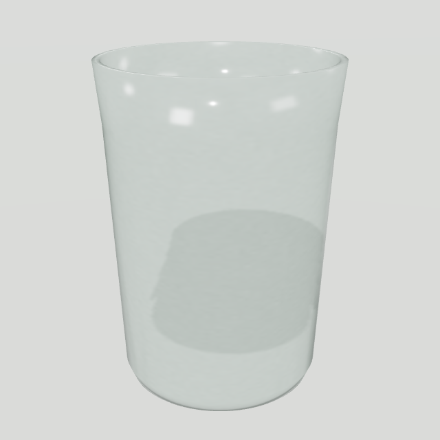
24 个实体碎片 · 最长边 11 厘米
完整 GLB碎片 GLB组合碰撞体尺寸与质量
33 个实体碎片 · 最长边 30 厘米
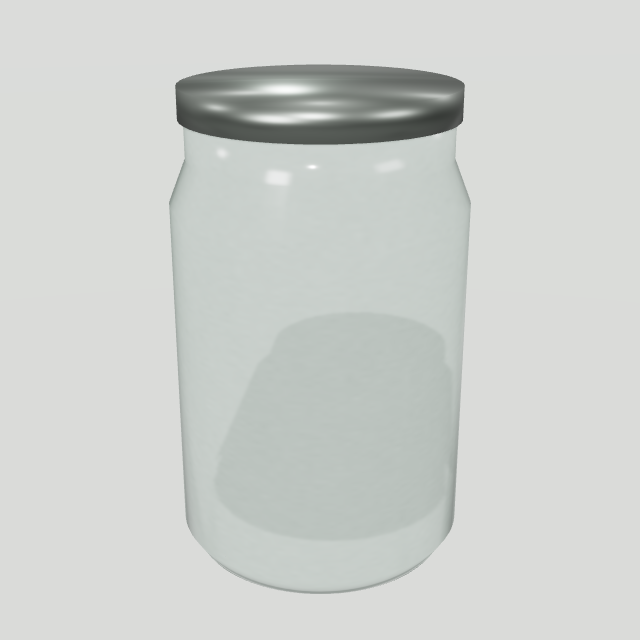
29 个实体碎片 · 最长边 17 厘米
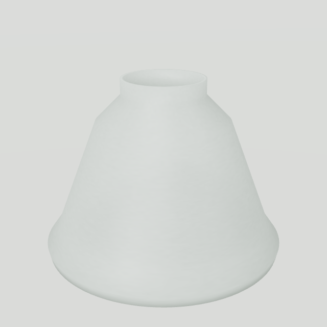
32 个实体碎片 · 最长边 22 厘米
20 个实体碎片 · 最长边 10 厘米
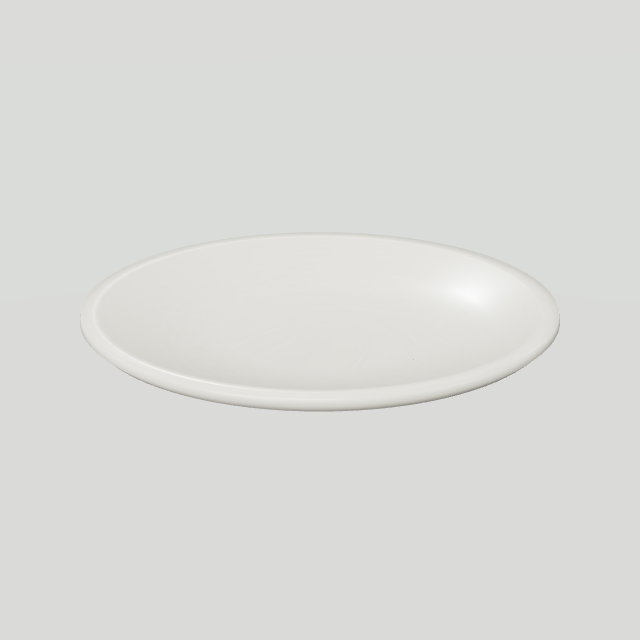
24 个实体碎片 · 最长边 25 厘米
22 个实体碎片 · 最长边 15 厘米
30 个实体碎片 · 最长边 26 厘米
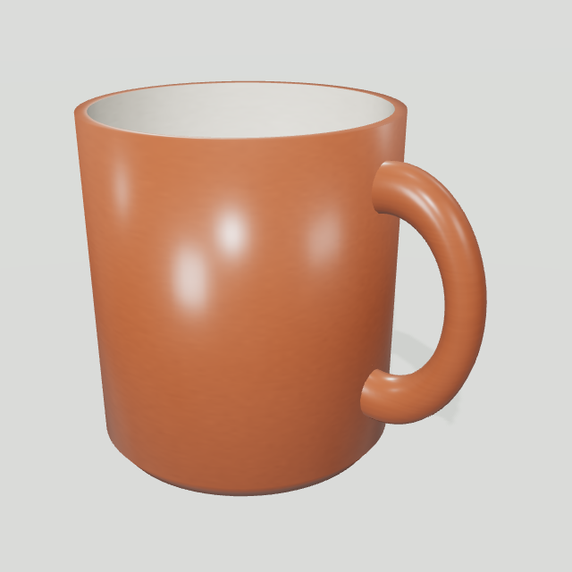
24 个实体碎片 · 最长边 12 厘米
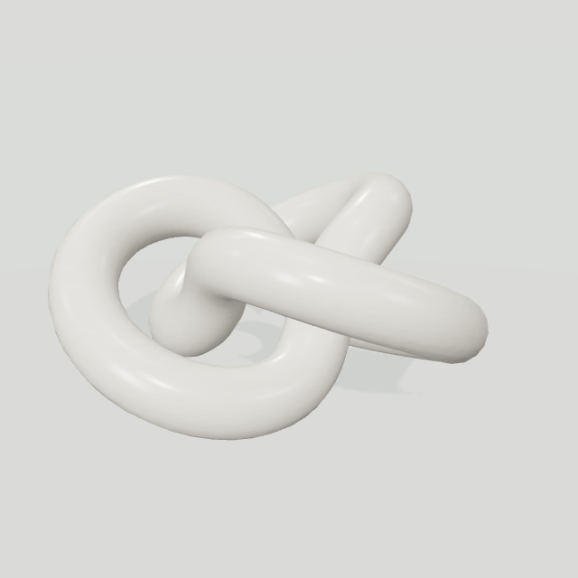
28 个实体碎片 · 最长边 16 厘米
77 个实体碎片 · 最长边 44 厘米
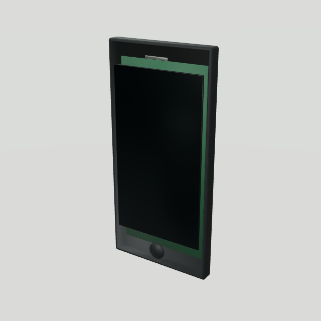
13 个实体碎片 · 最长边 15 厘米
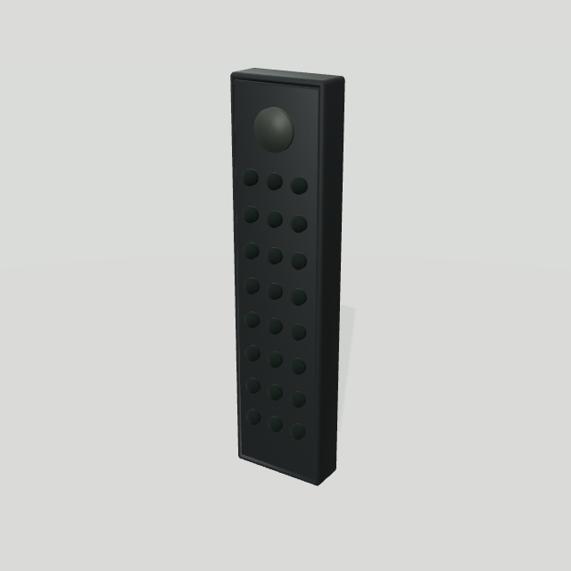
35 个实体碎片 · 最长边 18 厘米
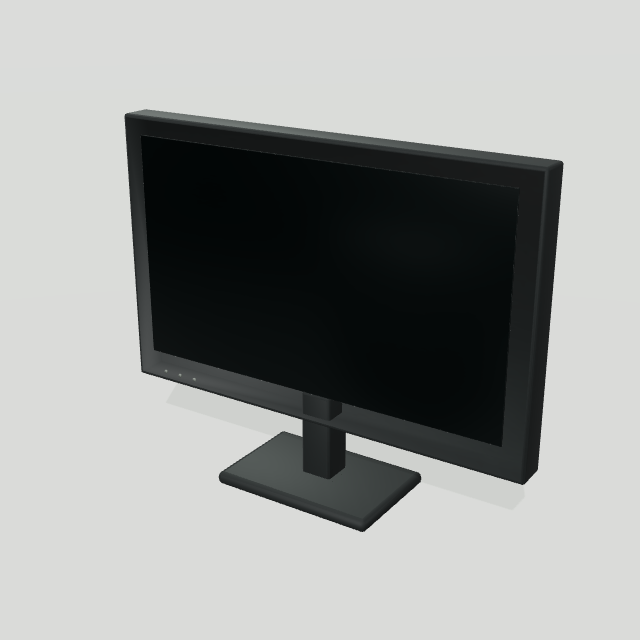
23 个实体碎片 · 最长边 46 厘米
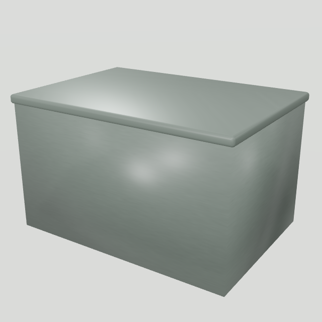
17 个实体碎片 · 最长边 30 厘米
中英文分别导出，动态文字目录独立保留。初始计数栏只显示总数；物品首次成功碎裂后再显示其计数。
无文字裂隙标记；前景、背景、单色层与多尺寸 PNG 已分开导出。
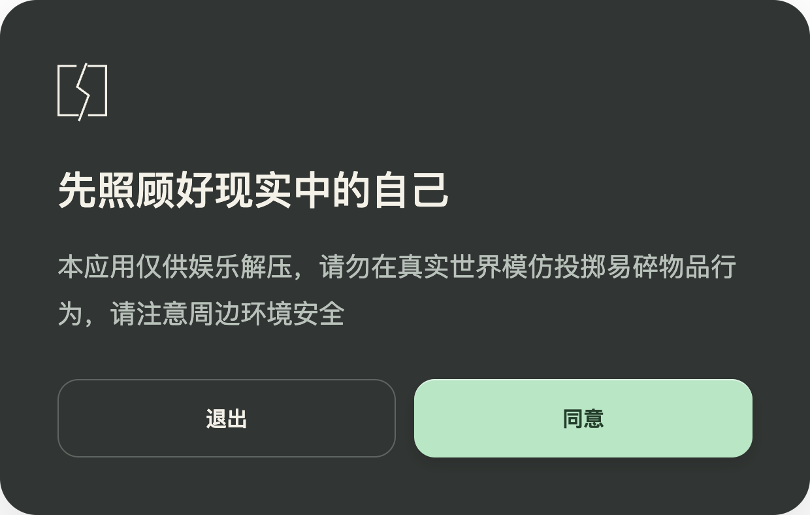
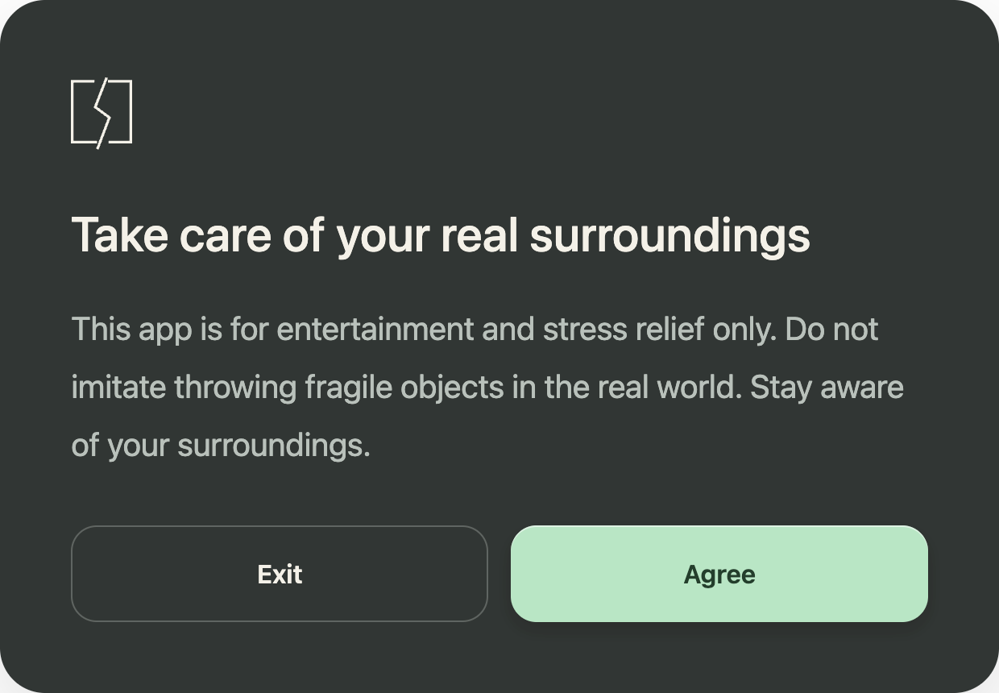
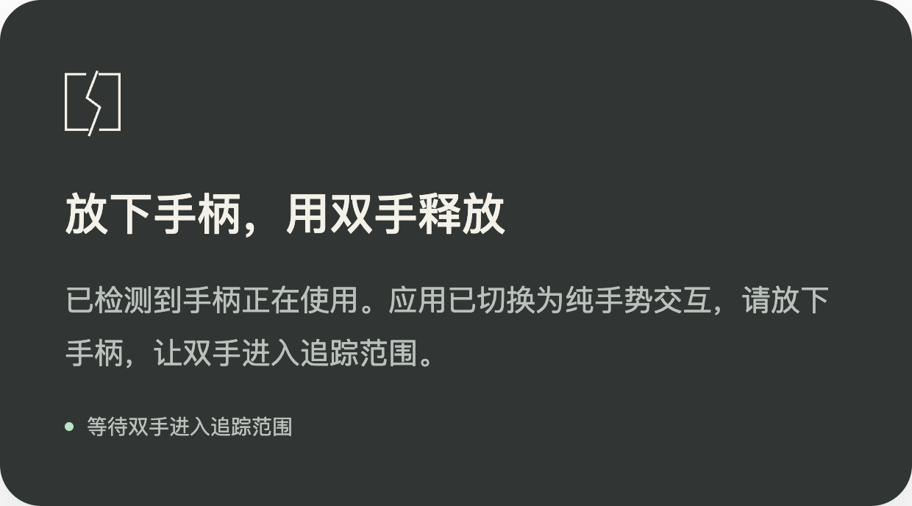
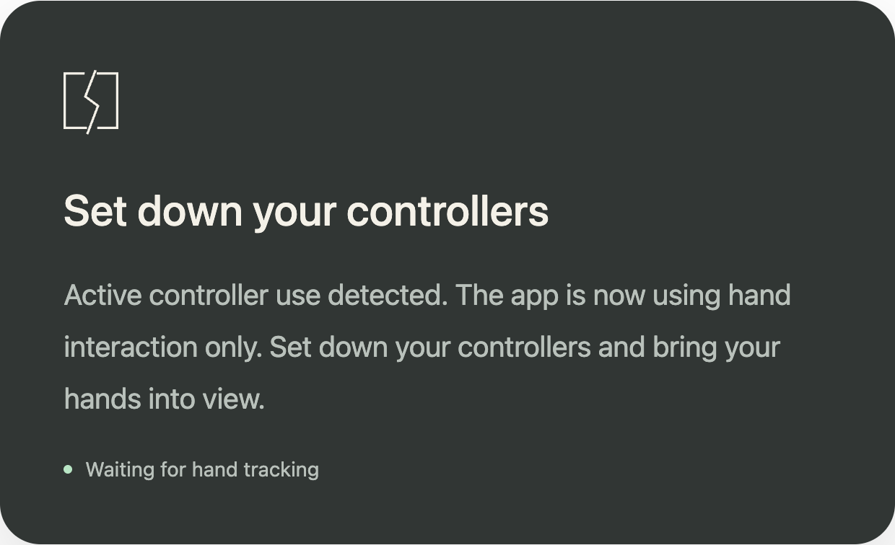
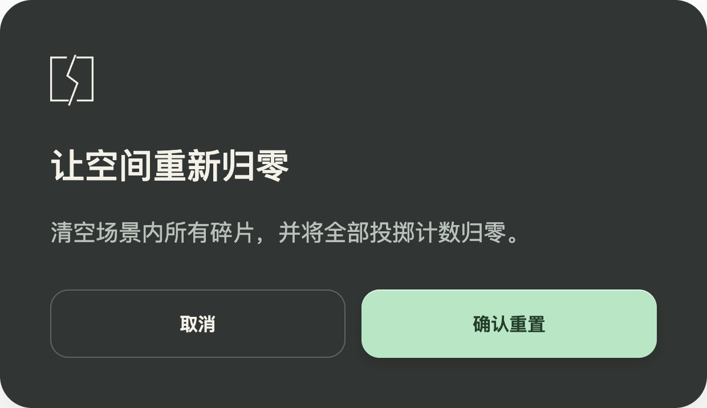
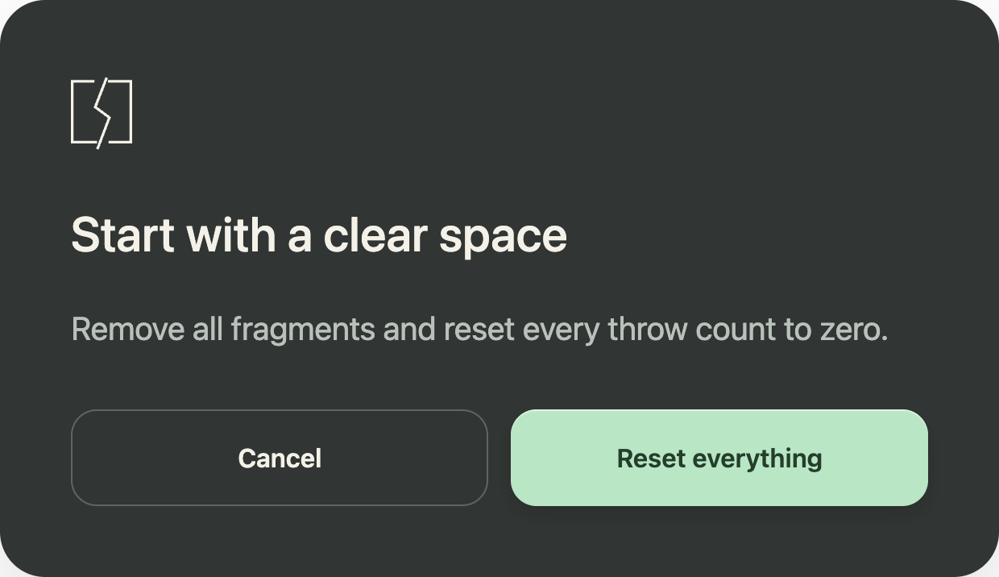
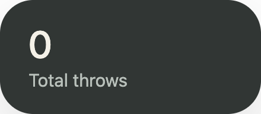
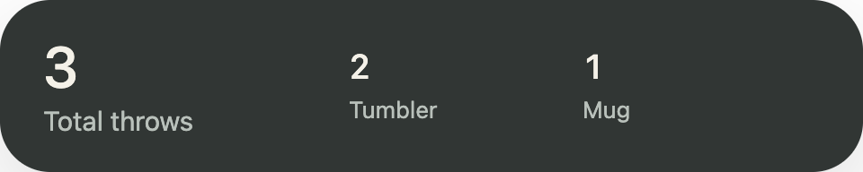
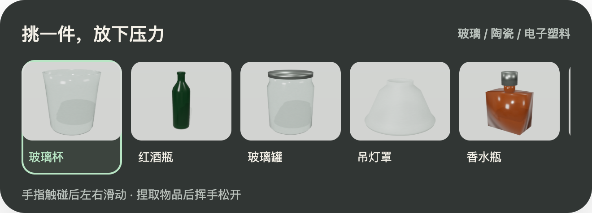
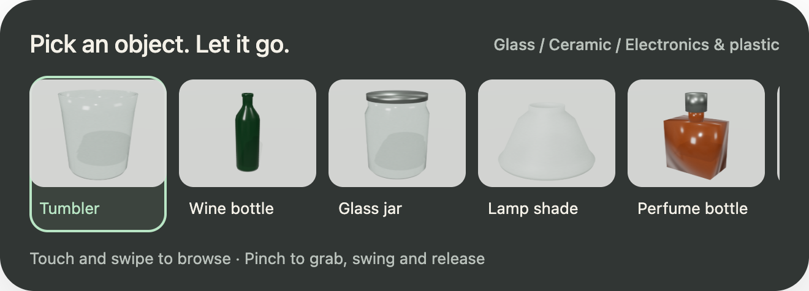
重点试听：玻璃与陶瓷修订第2版（含新旧对比）
48kHz 单声道 PCM16 WAV。每种材质有投掷、碎裂、碎片落地三类事件，每类三个变体；实际音色等待你试听确认。
串联试听：投掷 → 碎裂 → 碎片落地